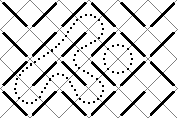

Para efeitos da nota atribuida à resolução de exercícios ao longo do semestre - Submeter até 23:59 de 29 de Maio
(o problema continuará depois disponível para submissão, mas sem contar para a nota)
[para perceber o contexto do problema deve ler o guião da aula #08]
Já reparaste que se pegares num rectângulo e o encheres com barras ("\" e "/") consegues criar um labirinto muito engraçado?
Repara na seguinte figura:

Como podes ver, caminhos em labirintos como este não podem ter ramificações (dividirem-se em dois ou mais ramos) e como tal todos os caminhos dentro do labirinto só podem ser cíclicos ou então começarem num sítio e acabarem noutro.
Neste problema estamos apenas interessados nos caminhos cíclicos. Recorda que um caminho é cíclico se for possível começar num ponto e voltar a ele mesmo através desse caminho.
A tua tarefa é escrever um programa para contar os ciclos e descobrir qual o maior deles. O tamanho de um ciclo é definido como o número de pequenos quadrados (os que estão delimitados na figura por traços cinzentos) que o ciclo contém. Por exemplo, na figura, temos dois ciclos, um com tamanho 16 e outro com tamanho 4.
Na primeira linha vêm dois números inteiros, C e L, indicando respectivamente o número de colunas e de linhas do labirinto.
Seguem-se L linhas, indicando o formato do labirinto (tal como descrito anteriormente), sendo que cada linha contém exactamente C caracteres, que só podem ser "\" ou "/".
Não te esqueças de verificar o exemplo de input para perceberes melhor a especificação (o primeiro exemplo de input corresponde à figura).
Se o labirinto não tiver nenhum caminho cíclico, deve ser impressa a frase "nao tem ciclos". Caso contrário, deve ser impresso "NUM_CICLOS MAIOR_TAM", onde NUM_CICLOS é o número total de ciclos e MAIOR_TAM o tamanho do maior ciclo.
São garantidos os seguintes limites em todos os casos de teste que irão ser colocados ao programa:
| 1 ≤ L ≤ 75 | Número de linhas | |
| 1 ≤ C ≤ 75 | Número de colunas |
6 4 \//\\/ \///\/ //\\/\ \/\///
2 16
3 3 /// \// \\\
nao tem ciclos
Desenho e Análise de Algoritmos (CC2001)
DCC/FCUP - Faculdade de Ciências da Universidade do Porto